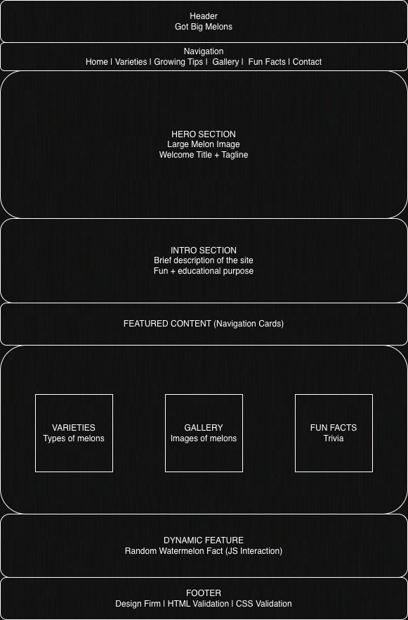
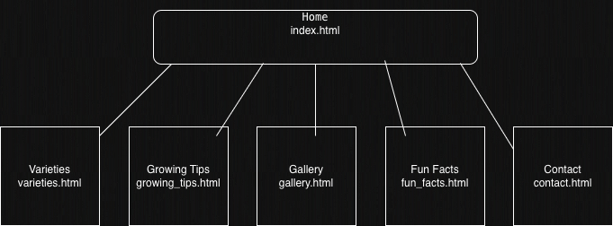

Project Overview - Got Big Melons
Project Name
Got Big Melons
Project Overview
Application Purpose
Got Big Melons is a fun and informative web application designed to teach users about the many different types of watermelons. The site presents educational content in a playful and engaging way, allowing users to explore varieties, learn fun facts, and understand how watermelons are grown.
Intended Users
- Fruit enthusiasts and gardeners
- Students looking for fun educational content
- Casual users interested in food facts
- Anyone curious about watermelon varieties
Overview of Content
The website includes watermelon varieties, growing tips, an interactive gallery, fun facts, and a contact form. Content is designed to be both informative and entertaining.
Client Information
- Name: Cory Castillero
- Organization: UNC Charlotte Student
- Email: ccasti18@charlotte.edu
- Phone: [private]
Wireframe

Time: 7:45 PM
Site Map

Time: 7:45 PM
Page Design
Home
- Purpose: Introduce the website
- Users: All visitors
- Content: Intro, featured sections
- Data Entry: No
- Validation: None
- Actions: Navigate to other pages
Varieties
- Purpose: Show watermelon types
- Users: Visitors
- Content: Types and descriptions
- Actions: Expand/click categories
Growing Tips
- Purpose: Explain how to grow melons
- Content: Soil, water, sunlight
Gallery
- Purpose: Show images
- Content: Interactive gallery
Fun Facts
- Purpose: Share trivia
- Content: Random facts
Contact
- Purpose: User feedback
- Data Entry: Yes
- Validation: Required fields
- Actions: Form validation
Dynamic Functionality
- Interactive image gallery (Gallery page)
- Accordion/tabs for varieties (Varieties page)
- Form validation (Contact page)
- Random fact generator (Fun Facts page)
- AJAX loading for watermelon facts or variety data
The website will include several interactive features using JavaScript, jQuery, and AJAX to improve user engagement and navigation. While the core functionality will be implemented with JavaScript, jQuery and jQuery UI will be used to simplify interactive elements such as tabs, accordions, and image galleries.
Notes
Designed for a client to create a fun educational watermelon site.
Name: Matthew R. Gibbs
Date: April 2026
Time: Approximately 3 hours to complete the project
overview document.